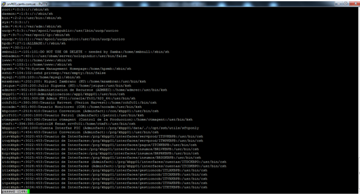
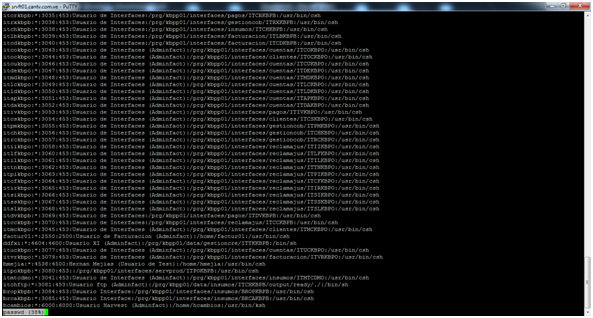
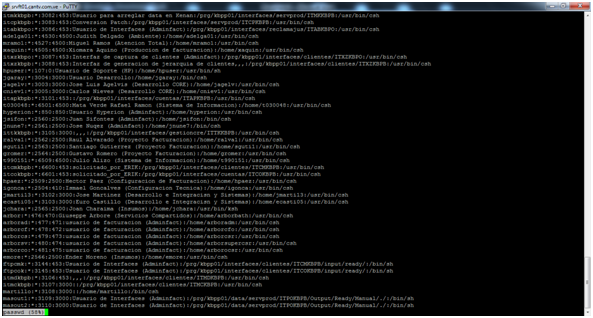
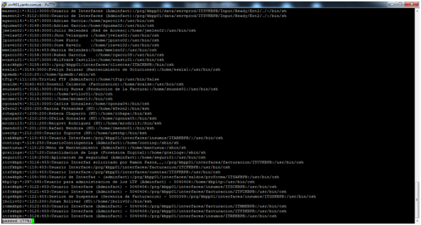
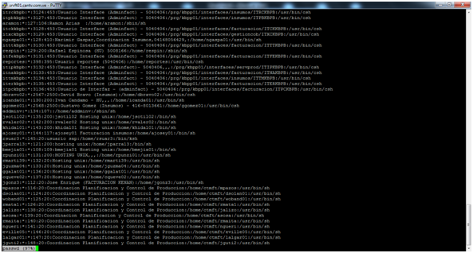
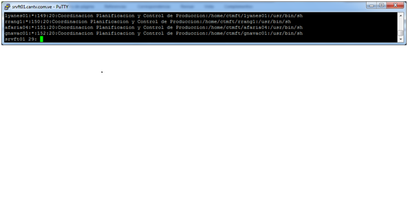

La Administración (Usuarios y coordinación) de las siguientes herramientas:
• Kenan User Security
Este módulo de Kenan está diseñado para configurar mediante el Security Services (Servicio que forma parte de los procesos que levantamos en Kenan para trabajar en línea) también llamada “S.S” el cual permite setear las transacciones de las interfaces mediante las API’S de KENAN es para la parte de seguridad, creación de usuarios, creación de roles, políticas de seguridad para interfaces, el cual se activa en un URL. Debido a que este módulo apunta a seguridad, en nuestra gerencia había o hay un grupo que se encargaba de esto, para ese momento era Carol Yerena y de su grupo asignaron a Jesús Zerpa y María Elena Lago Gómez, estas personas recibieron la inducción sobre la herramienta por parte de Jorge Romero, esto fue aproximadamente en el 2007, quedando ellos encargados de este módulo.
Revisando en BD de kenan KP01ADM se observan que existen una series de tablas en el esquema de ARBOR pertenecientes a la aplicación en cuestión, iniciando su nomenclatura de tablas SEC_*.
Alguien de ese equipo debe tener la documentación necesaria para extraer los datos que requieran, de lo contrario les puedo facilitar el manual.
Desconozco si José E., conoce bien o algo sobre la funcionalidad de este módulo, se tendría que preguntar.
A continuación voy a realizar un resumen de cómo se trabaja en este servidor SRVFT01 Kenan:
📌 Usuario de aplicación Kenan “kbpp01”, donde residen todos los componentes, servicios, manejadores, lenguajes, BD, binarios, log y todo lo relacionado a Kenan. Lo manejamos AMINFACT, este usuario es manejado para mantenimientos del aplicativo y mitigar y solventar fallas de los procesos batch.
📌 Usuario KBPLTP, para activar y desactivar los procesos que recopilan los archivos de tasación los cuales serán facturados luego, este usuario es como el hijo de KBPP01, lo manejamos ADMINFACT.
📌 Usuarios de Control-M, ctmft y ctmagent, esta herramienta es la corporativa encargada de ejecutar todos los procesos que son Batch en el servidor SRVFT01. Los encargados de este usuario es el equipo de José Montesinos. Este usuario tiene permiso para escribir y ejecutar en los directorios, ya que debe generar los archivos que son las salidas de las ejecuciones.
📌 Usuario Harvest cchft01, en la compañía manejamos lo que es el control de versiones de desarrollos, con la finalidad de poder reversar algún código a una versión anterior, cabe destacar que el usuario al que hago referencia es para levantar el servicio de la herramienta y poder bajar al servidor a las rutas tipificadas por los desarrolladores los objetos a implementar, ya sean, nuevos, modificaciones, eliminaciones sobre los códigos.
Es importante resaltar que este equipo cuenta con todos los usuarios y claves de las interfaces existentes en el servidor SRVFT01 lo que permite navegar por los directorios con los permisos que posean cada usuario, pero esto es necesario para que ellos puedan implementar los desarrollos en producción. Los mismos son únicamente los que manejan los usuarios y claves de las interfaces en el servidor. Este Grupo pertenece a José Montesinos.
Nota importante, actualmente no contamos con Harvest, al menos lo que tengo entendido y desconozco que procedimiento estén utilizando para implementar los códigos de los desarrolladores. OJO con esto!!!
📌 Usuario KBPPIC, usuario encargado de transferir archivos a las rutas indicadas, mediantes servicios creados para tal fin. Pertenece al grupo del PIC.
📌 Usuarios de interfaces, existen una serie de estas que ejecutan Batch, estos usuarios tienen permiso para actualizar o borrar, según el código establecido, como lo dije estos códigos son implementados por el manejador de control de Versiones. Responsable de estas interfaces, el equipo de Maigualida Bello.
📌 Usuario JGARAY, usuario utilizado para Wrapper, todas las modificaciones y/o actualizaciones, errores o fallas de esta interfaz la verifican en caliente(Directamente en producción, archivos y directorios de la interfaz), recuerdo que este usuario era asignado a Jhonny Garay que ya no trabaja para CANTV, sin embargo a pesar de en repetidas ocasiones hemos pedido suspender este usuario por lo obvio, el grupo de interfaces señala que este usuario de Wrapper posee muchas tablas de BD, archivos y otros que no son fáciles de configurar, lo que puede crear un cuello de botella en caso de no poder adecuar un user paralelo que haga lo mismo impactando producción. Responsable de este interfaces, equipo de Maigualida Bello.
Este usuario JGARAY es el único que no es manejado solamente por Harvest sino también por los desarrolladores, ahora bien, no recuerdo si el equipo de Control de Versiones posee este usuario, ya que una de las condiciones para ellos poder tener control sobre los procesos y ser responsables era no compartir claves ni usuarios con otro equipo o persona.
📌 Usuario GROMER, este pertenece a Gustavo Romero pertenece al equipo de configuración de Factura, equipo de Maigualida Bello. Dicho usuario es utilizado para mitigar facturas en error y ejecutar en caliente las mismas, tiene un privilegio amplio en permisos ya que requiere los binarios de la aplicación para poder ejecutar los reprocesos de clientes en error.
📌 Usuarios MASENT1, MASENT2, MASOUT1 y MASOUT2, estos usuarios son utilizados para transmitir al servidor SRVFT01 archivos que son suministrados y manipulados por una estación de trabajo y se colocan en el servidor mediante un CoreFTP para su posterior procesamiento. Este usuario pertenece al grupo de Ángel Pimentel , el usuario es Ramón Estanga.
📌 El resto de los usuarios existentes en el servidor son pertenecientes a unas series de grupos que ellos justificarán los mismos, ejemplo: S.O, Control de la Producción, Insumos, Facturación, Configuración de Factura y otros.
1.- Listados de los usuarios que tienen acceso a archivos, directorios y datos confidenciales. Para cada cuenta identificar la justificación del privilegio de acceso e indique la persona que valida el acceso
Anexo pantallas de usuarios:






Listado de usuarios
root:*:0:3::/:/sbin/sh
daemon:*:1:5::/:/sbin/sh
bin:*:2:2::/usr/bin:/sbin/sh
sys:*:3:3::/:
adm:*:4:4::/var/adm:/sbin/sh
uucp:*:5:3::/var/spool/uucppublic:/usr/lbin/uucp/uucico
lp:*:9:7::/var/spool/lp:/sbin/sh
nuucp:*:11:11::/var/spool/uucppublic:/usr/lbin/uucp/uucico
hpdb:*:27:1:ALLBASE:/:/sbin/sh
www:*:30:1::/:
smbnull:*:101:101:DO NOT USE OR DELETE - needed by Samba:/home/smbnull:/sbin/sh
webadmin:*:40:1::/usr/obam/server/nologindir:/usr/bin/false
iwww:*:102:1::/home/iwww:/sbin/sh
owww:*:103:1::/home/owww:/sbin/sh
hpsmh:*:79:79:System Management Homepage:/home/hpsmh:/sbin/sh
sshd:*:104:102:sshd privsep:/var/empty:/bin/false
mysql:*:105:103::/home/mysql:/sbin/sh
mzambran:*:202:200: Miguel Zambrano (HU):/home/mzambran:/usr/bin/ksh
jsigue:*:205:200:Julio Siguena (HU):/home/jsigue:/usr/bin/ksh
admrec:*:902:200:Administracion de Recursos (ADMREC):/home/admrec:/usr/bin/ksh
kbpp01:*:411:410:AdminAplicacion:/appl/kbpp01:/usr/bin/csh
oraft01:*:301:300:DB Admin FT01:/oracle/ft01/920_64:/usr/bin/sh
cchft01:*:380:380:Usuario Hatvest (Verion Harvest):/home/cchft01:/bin/csh
nocadm:*:901:900:Usuario Monitoreo (COR):/home/nocadm:/usr/bin/ksh
kbpconv:*:2519:410:Usuario Conversion (Adminfact):/con/kbpp01:/usr/bin/csh
ptrft01:*:1800:1800:Usuario Patrol (Adminfact):/patrol:/usr/bin/ksh
ctmagent:*:392:390:Usuario ctmagent (Control de la Produccion):/home/ctmagent:/usr/bin/ksh
ctmft:*:396:395:ControlM Kenan srvft01:/home/ctmft:/usr/bin/csh
kbppic:*:106:1000:Cuenta Interfaz PIC (Adminfact):/prg/kbpp01/data/./:/opt/ssh/utils/sftponly
intkbpp1:*:454:453:Usuario Conversion (Adminfact):/prg/kbpp01:/usr/bin/csh
itsvkbpb:*:3020:453:Usuario de Interfaces: /prg/kbpp01/interfaces/servprod/ITSVKBPB: /usr/bin/csh
itwpkbpb:*:3021:453:Usuario de Interfaces: /prg/kbpp01/interfaces/servprod/ITWPKBPB: /usr/bin/csh
itcnkbpb:*:3022:453:Usuario de Interfaces:/prg/kbpp01/interfaces/pagos/ITCNKBPB:/usr/bin/csh
brlvkbpb:*:3023:453:Usuario de Interface: /prg/kbpp01/interfaces/insumos/BRLVKBPB: /usr/bin/csh
brprkbpb:*:3024:453:Usuario de Interface: /prg/kbpp01/interfaces/insumos/BRPRKBPB: /usr/bin/csh
brsgkbpb:*:3025:453:Usuario de Interfaces:/prg/kbpp01/interfaces/insumos/BRSGKBPB:/usr/bin/csh
itdckbpo:*:3027:453:Usuario de Interfaces (Adminfact): /prg/kbpp01/interfaces/cuentas/ITDCKBPO: /usr/bin/csh
itcdkbpo:*:3028:453:Usuario de Interfaces (Adminfact): /prg/kbpp01/interfaces/cuentas/ITCDKBPO: /usr/bin/csh
itlxkbpb:*:3030:453:Usuario de Interfaces: /prg/kbpp01/interfaces/gestioncob/ITLXKBPB: /usr/bin/csh
itcxkbpb:*:3031:453:Usuario de Interfaces: /prg/kbpp01/interfaces/gestioncob/ITCXKBPB: /usr/bin/csh
itvxkbpb:*:3032:453:Usuario de Interfaces: /prg/kbpp01/interfaces/gestioncob/ITVXKBPB: /usr/bin/csh
itpakbpb:*:3033:453:Usuario de Interfaces: /prg/kbpp01/interfaces/gestioncob/ITPAKBPB: /usr/bin/csh
itetkbpb:*:3034:453:Usuario de Interfaces: /prg/kbpp01/interfaces/gestioncob/ITETKBPB: /usr/bin/csh
itcrkbpb:*:3035:453:Usuario de Interfaces:/prg/kbpp01/interfaces/pagos/ITCRKBPB:/usr/bin/csh
itrxkbpb:*:3036:453:Usuario de Interfaces: /prg/kbpp01/interfaces/gestioncob/ITRXKBPB: /usr/bin/csh
itchkbpb:*:3038:453:Usuario de Interfaces: /prg/kbpp01/interfaces/insumos/ITCHKBPB: /usr/bin/csh
itlbkbpb:*:3039:453:Usuario de Interfaces: /prg/kbpp01/interfaces/facturacion/ITLBKBPB: /usr/bin/csh
itcdkbpb:*:3040:453:Usuario de Interfaces: /prg/kbpp01/interfaces/facturacion/ITCDKBPB: /usr/bin/csh
itcokbpo:*:3043:453:Usuario de Interfaces (Adminfact): /prg/kbpp01/interfaces/cuentas/ITCOKBPO: /usr/bin/csh
itockbpo:*:3044:453:Usuario de Interfaces (Adminfact): /prg/kbpp01/interfaces/clientes/ITOCKBPO: /usr/bin/csh
itcukbpo:*:3046:453:Usuario de Interfaces (Adminfact): /prg/kbpp01/interfaces/cuentas/ITCUKBPO: /usr/bin/csh
itdekbpo:*:3047:453:Usuario de Interfaces (Adminfact): /prg/kbpp01/interfaces/cuentas/ITDEKBPO: /usr/bin/csh
itmdkbpo:*:3048:453:Usuario de Interfaces (Adminfact): /prg/kbpp01/interfaces/cuentas/ITMDKBPO: /usr/bin/csh
itlckbpo:*:3049:453:Usuario de Interfaces (Adminfact): /prg/kbpp01/interfaces/cuentas/ITLCKBPO: /usr/bin/csh
itldkbpo:*:3050:453:Usuario de Interfaces (Adminfact): /prg/kbpp01/interfaces/cuentas/ITLDKBPO: /usr/bin/csh
itapkbpo:*:3051:453:Usuario de Interfaces (Adminfact): /prg/kbpp01/interfaces/cuentas/ITAPKBPO: /usr/bin/csh
itdakbpo:*:3052:453:Usuario de Interfaces (Adminfact): /prg/kbpp01/interfaces/cuentas/ITDAKBPO: /usr/bin/csh
itivkbpo:*:3053:453:Usuario de Interfaces (Adminfact): /prg/kbpp01/interfaces/pagos/ITIVKBPO: /usr/bin/csh
itcskbpo:*:3054:453:Usuario de Interfaces (Adminfact): /prg/kbpp01/interfaces/clientes/ITCSKBPO: /usr/bin/csh
itpmkbpo:*:3055:453:Usuario de Interfaces (Adminfact): /prg/kbpp01/interfaces/gestioncob/ITPMKBPO: /usr/bin/csh
itchkbpo:*:3056:453:Usuario de Interfaces (Adminfact): /prg/kbpp01/interfaces/gestioncob/ITCHKBPO: /usr/bin/csh
itrckbpo:*:3057:453:Usuario de Interfaces (Adminfact): /prg/kbpp01/interfaces/gestioncob/ITRCKBPO: /usr/bin/csh
itiikbpo:*:3058:453:Usuario de Interfaces (Adminfact): /prg/kbpp01/interfaces/reclamajus/ITIIKBPO: /usr/bin/csh
itlfkbpo:*:3060:453:Usuario de Interfaces (Adminfact): /prg/kbpp01/interfaces/reclamajus/ITLFKBPO: /usr/bin/csh
itilkbpo:*:3061:453:Usuario de Interfaces (Adminfact): /prg/kbpp01/interfaces/reclamajus/ITILKBPO: /usr/bin/csh
ittnkbpo:*:3062:453:Usuario de Interfaces (Adminfact): /prg/kbpp01/interfaces/reclamajus/ITTNKBPO: /usr/bin/csh
itpikbpo:*:3063:453:Usuario de Interfaces (Adminfact): /prg/kbpp01/interfaces/reclamajus/ITPIKBPO: /usr/bin/csh
itcfkbpo:*:3064:453:Usuario de Interfaces (Adminfact): /prg/kbpp01/interfaces/reclamajus/ITCFKBPO: /usr/bin/csh
itirkbpo:*:3065:453:Usuario de Interfaces (Adminfact): /prg/kbpp01/interfaces/reclamajus/ITIRKBPO: /usr/bin/csh
itsikbpo:*:3066:453:Usuario de Interfaces (Adminfact): /prg/kbpp01/interfaces/reclamajus/ITSIKBPO: /usr/bin/csh
itsskbpo:*:3067:453:Usuario de Interfaces (Adminfact): /prg/kbpp01/interfaces/reclamajus/ITSSKBPO: /usr/bin/csh
itslkbpo:*:3068:453:Usuario de Interfaces (Adminfact): /prg/kbpp01/interfaces/reclamajus/ITSLKBPO: /usr/bin/csh
itdvkbpb:*:3069:453:Usuario de Interfaces:/prg/kbpp01/interfaces/pagos/ITDVKBPB:/usr/bin/csh
itcckbpb:*:3070:453:Usuario de Interfaces: /prg/kbpp01/interfaces/reclamajus/ITCCKBPB: /usr/bin/csh
itmckbpo:*:3045:453:Usuario de Interfaces (Adminfact): /prg/kbpp01/interfaces/clientes/ITMCKBPO: /usr/bin/csh
factur01:*:2550:2500:Usuario de Facturacion (Adminfact):/home/factur01:/usr/bin/csh
ddfxi:*:4604:4600:Usuario XI (Adminfact):/prg/kbpp01/data/gestioncre/ITTKKBPB:/bin/sh
ituckbpo:*:3077:453:Usuario de Interfaces (Adminfact): /prg/kbpp01/interfaces/cuentas/ITUCKBPO: /usr/bin/csh
itvrkbpo:*:3079:453:Usuario de Interfaces (Adminfact): /prg/kbpp01/interfaces/facturacion/ITVRKBPO: /usr/bin/csh
hmejia:*:4538:4500:Hernan Mejias (Usuario de Test):/home/hmejia:/usr/bin/csh
itpokbpb:*:3080:453::/prg/kbpp01/interfaces/servprod/ITPOKBPB:/usr/bin/csh
itmtcdmo:*:3041:453:Usuario de Interfaces (Adminfact): /prg/kbpp01/interfaces/insumos/ITMTCDMO: /usr/bin/csh
itchftp:*:3081:453:Usuario ftp (Adminfact): /prg/kbpp01/data/insumos/ITCHKBPB/output/ready/./: /bin/sh
bropkbpb:*:3084:453:Usuario Interface:/prg/kbpp01/interfaces/insumos/BROPKBPB:/usr/bin/csh
brcakbpb:*:3085:453:Usuario Interface:/prg/kbpp01/interfaces/insumos/BRCAKBPB:/usr/bin/csh
hcambios:*:6000:6000:Usuario Harvest (Adminfact):/home/hcambios:/usr/bin/ksh
itmkkbpb:*:3082:453:Usuario para arreglar data en Kenan: /prg/kbpp01/interfaces/servprod/ITMKKBPB: /usr/bin/csh
itcpkbpb:*:3083:453:Conversion Patch:/prg/kbpp01/interfaces/servprod/ITCPKBPB:/usr/bin/csh
itabkbpo:*:3086:453:Usuario de Interfaces (Adminfact): /prg/kbpp01/interfaces/reclamajus/ITABKBPO: /usr/bin/csh
adelga01:*:4530:4500:Judith Delgado (Ambiente):/home/adelga01:/usr/bin/csh
mramo1:*:4527:4500:Miguel Ramos (Atencion Total):/home/mramo1:/usr/bin/csh
xaquin:*:4505:4500:Xiomara Aquino (Produccion de facturacion):/home/xaquin:/usr/bin/csh
itxzkbpo:*:3087:453:Interfaz de captura de clientes (Adminfact): /prg/kbpp01/interfaces/clientes/ITXZKBPO: /usr/bin/csh
itxzkbpb:*:3088:453:Interfaz de generacion de jerarquia de clientes,,,: /prg/kbpp01/interfaces/clientes/ITXZKBPB: /usr/bin/csh
hpuser:*:107:0:Usuario de Soporte (HP):/home/hpuser:/usr/bin/sh
jgaray:*:3004:3000:Usuario Desarrollo:/home/jgaray:/bin/csh
jagelv:*:3003:3000:Jose Luis Agelvis (Desarrollo CORE):/home/jagelv:/usr/bin/csh
cniev1:*:3005:3000:Carlos Nieves (Desarrollo CORE):/home/cniev1:/usr/bin/csh
itapkbpb:*:3101:453::/prg/kbpp01/interfaces/cuentas/ITAPKBPB:/usr/bin/csh
t030048:*:6501:6500:Mata Verde Rafael Ramon (Sistema de Informacion): /home/t030048: /usr/bin/csh
hyperion:*:850:850:Usuario Hyperion (Adminfact):/home/hyperion:/usr/bin/csh
jsifon:*:2560:2500:Juan Sifontes (Adminfact):/home/jsifon:/bin/csh
jnune7:*:2561:2500:Jose Nuqez (Adminfact):/home/jnune7:/bin/csh
ittkkbpb:*:3105:3000:,,,:/prg/kbpp01/interfaces/gestioncre/ITTKKBPB:/usr/bin/csh
ralva1:*:2562:2500:Raul Alvarado (Proyecto Facturacion):/home/ralva1:/usr/bin/csh
sguti1:*:2563:2500:Santiago Gutierrez (Proyecto Facturacion):/home/sguti1:/usr/bin/csh
gromer:*:2564:2500:Gustavo Romero (Proyecto Facturacion):/home/gromer:/usr/bin/csh
t990151:*:6509:6500:Julio Alizo (Sistema de Informacion):/home/t990151:/usr/bin/csh
itcmkbpb:*:6600:453:solicitado_por_ERIK:/prg/kbpp01/interfaces/clientes/ITCMKBPB:/usr/bin/csh
itcokbpb:*:6601:453:solicitado_por_ERIK:/prg/kbpp01/interfaces/cuentas/ITCOKBPB:/usr/bin/csh
hpaez:*:2509:2500:Hector Paez (Configuracion de Facturacion):/home/hpaez:/usr/bin/csh
igonca:*:2504:410:Ismael Goncalves (Configuracion Tecnica):/home/igonca:/usr/bin/csh
jmarti13:*:3102:3000:Jose Martinez (Desarrollo e Integracisn y Sistemas): /home/jmarti13: /usr/bin/csh
ecasti05:*:3103:3000:Euro Castillo (Desarrollo e Integracisn y Sistemas): /home/ecasti05: /usr/bin/csh
jchara:*:2565:2500:Joan Charaima (Insumos):/home/jchara:/usr/bin/ksh
arbor:*:476:470:Giuseppe Arbore (Servicios Compartidos):/home/arborbath:/usr/bin/csh
arborad:*:477:471:usuario de facturacion (Adminfact):/home/arboradm:/usr/bin/csh
arborcf:*:478:472:usuario de facturacion (Adminfact):/home/arborcfo:/usr/bin/csh
arborcs:*:479:473:usuario de facturacion (Adminfact):/home/arborcsr:/usr/bin/csh
arborsv:*:480:474:usuario de facturacion (Adminfact):/home/arborsupercsr:/usr/bin/csh
arborco:*:481:475:usuario de facturacion (Adminfact):/home/arborocsr:/usr/bin/csh
emore:*:2566:2500:Ender Moreno (Insumos):/home/emore:/usr/bin/csh
ftpcmk:*:3144:453:Usuario de Interfaces (Adminfact): /prg/kbpp01/interfaces/clientes/ITCMKBPB/input/ready/: /bin/sh
ftpcok:*:3145:453:Usuario de Interfaces (Adminfact): /prg/kbpp01/interfaces/clientes/ITCOKBPB/input/ready/: /bin/sh
itmdkbpb:*:3106:453:,,,:/prg/kbpp01/interfaces/clientes/ITMDKBPB:/usr/bin/csh
itmckbpb:*:3107:3000::/prg/kbpp01/interfaces/clientes/ITMCKBPB:/usr/bin/csh
martillo:*:3108:3000::/home/martillo:/bin/csh
masout1:*:3109:3000:Usuario de Interfaces (Adminfact):/prg/kbpp01/data/servprod/ITPOKBPB/Output/Ready/Manual/./:/bin/sh
masout2:*:3110:3000:Usuario de Interfaces (Adminfact): /prg/kbpp01/data/servprod/ITPOKBPB/Output/Ready/Manual/./: /bin/sh
masent1:*:3111:3000:Usuario de Interfaces (Adminfact): /prg/kbpp01/data/servprod/ITSVKBPB/Input/Ready/Ent2/./: /bin/sh
masent2:*:3112:3000:Usuario de Interfaces (Adminfact):/prg/kbpp01/data/servprod/ITSVKBPB/Input/Ready/Ent2/./:/bin/sh
agarci14:*:3147:3000:Adrian Garcia:/home/agarci14:/usr/bin/csh
dguzma02:*:3148:3000:Adrian Garcia:/home/dguzma02:/usr/bin/csh
jmelen02:*:3149:3000:Julio Melendez (Red de Acceso):/home/jmelen02:/usr/bin/csh
jvelas02:*:3150:3000:Jhon Velazquez :/home/jvelas02:/usr/bin/csh
jpinto02:*:3151:3000:Jose Pinto :/home/jpinto02:/usr/bin/csh
jravel02:*:3152:3000:Jose Ravelo :/home/jravel02:/usr/bin/csh
mmelen02:*:3154:453:Marcia Melendez:/home/mmelen02:/usr/bin/csh
rgarci08:*:3156:3000:Ruben Garccia :/home/rgarci08:/usr/bin/csh
wcasti01:*:3157:3000:Wilfrank Castillo:/home/wcasti01:/usr/bin/csh
itackbpb:*:3158:453::/prg/kbpp01/interfaces/clientes/ITACKBPB:/bin/csh
esala1:*:3159:3000:Evelyn Salazar (Mantenimiento de Soluciones):/home/esala1:/usr/bin/csh
hpsmdb:*:110:20::/home/hpsmdb:/sbin/sh
tftp:*:111:105:Trivial FTP (Adminfact):/home/tftp:/usr/bin/false
dcalde:*:3160:453:Donehil Calderon (Facturacion):/home/dcalde:/usr/bin/csh
snunes01:*:3161:3000:Steicy Nunes (Produccion de la Factura):/home/snunes01:/usr/bin/csh
avilor01:*:3113:3000::/home/avilor01:/bin/csh
mromer13:*:3114:3000::/home/mromer13:/bin/csh
cgonza04:*:3115:3000:Carlos Gonzales:/home/cgonza04:/bin/csh
kfern2:*:203:200:Karina Fernandes (HU):/home/kfern2:/bin/ksh
rchaparr:*:209:200:Rebeca Chaparro (HU):/home/rchapa:/bin/ksh
ogonza05:*:210:200:Ofelia Gonzalez (HU):/home/ogonza05:/bin/ksh
mrodri13:*:211:200:Maigret Rodriguez (HU):/home/mrodri13:/bin/ksh
rmendo01:*:201:200:Rafael Mendoza (HU):/home/rmendo01:/bin/ksh
userhp:*:212:200:Usuario Soporte (HP):/home/userhp:/bin/ksh
itabkbpb:*:113:453:Usuario Interfase:/prg/kbpp01/interfaces/insumos/ITABKBPB/:/usr/bin/csh
conting:*:114:250:UsuarioContingencia (Adminfact):/home/conting:/sbin/sh
mantusua:*:115:20:Menu de Mantenimiento (Adminfact):/home/mantusua:/sbin/sh
gcsilogs:*:117:20:Consolidacion de Logs (Forensica Digital):/home/gcsilogs:/sbin/sh
seguri01:*:118:2500:Aplicacisn de seguridad (Adminfact):/home/seguri01:/usr/bin/csh
itcvkbpb:*:3116:453:Usuario Interfaz solicitado por Ramon Pazos,,,:/prg/kbpp01/interfaces/facturacion/ITCVKBPB:/usr/bin/csh
itcfkbpb:*:119:453:Usuario Interface:/prg/kbpp01/interfaces/facturacion/ITCFKBPB:/usr/bin/csh
itsfkbpb:*:120:453:Usuario Interface:/prg/kbpp01/interfaces/cuentas/ITSFKBPB:/usr/bin/csh
itsakbpb:*:109:395:Usuario de Interfaz - (adminfact): /prg/kbpp01/interfaces/saldos/proforma/ITSAKBPB: /usr/bin/csh
kbpltp:*:397:395:Usuario para administracion de los LTP (Adminfact) - 5040406: /home/kbpltp: /usr/bin/csh
itsckbpb:*:3122:453:Usuario Interface (Adminfact) - 5040406: /prg/kbpp01/interfaces/insumos/ITSCKBPB: /usr/bin/csh
itfckbpb:*:3121:453:Usuario Interface (Adminfact) - 5040406: /prg/kbpp01/interfaces/facturacion/ITFCKBPB: /usr/bin/csh
itgskbpb:*:122:453:Gestion de Suspensos (Gerencia de Facturacion) - 5000399: /prg/kbpp01/interfaces/insumos/ITGSKBPB: /usr/bin/csh
jboliv02:*:123:200:Johan Bolivar (HU):/home/jboliv02:/bin/ksh
itmmkbpb:*:3123:453:Usuario Interface (Adminfact) - 5040406: /prg/kbpp01/interfaces/facturacion/ITMMKBPB: /usr/bin/csh
itfskbpb:*:3125:453:Usuario Interface (Adminfact) - 5040406: /prg/kbpp01/interfaces/facturacion/ITFSKBPB: /usr/bin/csh
itrkkbpb:*:3126:453:Usuario Interface (Adminfact) - 5040406: /prg/kbpp01/interfaces/insumos/ITRKKBPB: /usr/bin/csh
itrckbpb:*:3124:453:Usuario Interface (Adminfact) - 5040406: /prg/kbpp01/interfaces/insumos/ITRCKBPB: /usr/bin/csh
itpbkbpb:*:3127:453:Usuario Interface (Adminfact) - 5040406: /prg/kbpp01/interfaces/insumos/ITPBKBPB: /usr/bin/csh
aramon:*:127:106:Ramon Arias :/home/aramon:/sbin/sh
itckkbpb:*:3128:453:Usuario Interface (Adminfact) - 5040406: /prg/kbpp01/interfaces/facturacion/ITCKKBPB: /usr/bin/csh
itxckbpb:*:3129:453:Usuario Interface (Adminfact) - 5040406: /prg/kbpp01/interfaces/gestioncob/ITXCKBPB: /usr/bin/csh
ngaspa01:*:128:410:Narimir Gaspar,Coordinacion Insumos,04168056429,: /home/ngaspa01: /usr/bin/sh
itttkbpb:*:3130:453:Usuario Interface (Adminfact) - 5040406: /prg/kbpp01/interfaces/facturacion/ITTTKBPB: /usr/bin/csh
respin:*:129:200:Rafael Espinosa (HU) 5008166:/home/respin:/sbin/sh
itfekbpb:*:3131:453:Usuario Interface (Adminfact) - 5040406: /prg/kbpp01/interfaces/facturacion/ITFEKBPB: /usr/bin/csh
reportes:*:398:395:Usuario reportes (5040406):/home/reportes:/usr/bin/csh
itipkbpb:*:3132:453:Usuario Interface (Adminfact)- 5040406,,,: /prg/kbpp01/interfaces/servprod/ITIPKBPB: /usr/bin/csh
itnakbpb:*:3133:453:Usuario Interface (Adminfact) - 5040406: /prg/kbpp01/interfaces/facturacion/ITNAKBPB: /usr/bin/csh
ittmkbpb:*:3134:453:Usuario Interface (Adminfact) - 5040406: /prg/kbpp01/interfaces/insumos/ITTMKBPB: /usr/bin/csh
iterkbpb:*:3135:453:Usuario Interface (Adminfact) - 5040406: /prg/kbpp01/interfaces/facturacion/ITERKBPB: /usr/bin/csh
itpckbpb:*:3136:453:Usuario de Interfaz - (adminfact) - 5040406: /prg/kbpp01/interfaces/facturacion/ITPCKBPB: /usr/bin/csh
dbravo02:*:2567:2500:David Bravo (Insumos):/home/dbravo02:/usr/bin/csh
icanda01:*:130:200:Ivan Candamo - HU,,,:/home/icanda01:/usr/bin/sh
ggomez01:*:2568:2500:Gustavo Gomez (Insumos) - 416-8013661:/home/ggomez01:/usr/bin/csh
addminv:*:134:107::/home/addminv:/sbin/sh
jsotil02:*:135:200:jsotil02 Hosting unix:/home/jsotil02:/bin/sh
rvaler02:*:142:200:rvaler02 Hosting unix:/home/rvaler02:/bin/sh
khidal01:*:143:200:khidal01 Hosting unix:/home/khidal01:/bin/sh
ajosey01:*:144:117:ajosey01 Facturacion insumos:/home/ajosey01:/bin/sh
rsuar3:*:145:20:usuario sap:/home/rsuar3:/bin/ksh
jparra13:*:121:200:hosting unix:/home/jparra13:/bin/sh
bmejia01:*:108:109:bmejia01 Hosting unix:/home/bmejia01:/bin/sh
rpunzi01:*:131:200:HOSTING UNIX,,,:/home/rpunzi01:/usr/bin/sh
rmarti39:*:132:20:Hosting unix:/home/rmarti39:/usr/bin/sh
jguzma04:*:133:20:Hosting unix:/home/jguzma04:/usr/bin/sh
ggalat01:*:136:20:Hosting unix:/home/ggalat01:/usr/bin/sh
cqueve02:*:137:20:Hosting unix:/home/cqueve02:/usr/bin/sh
jgonz3:*:112:20:Jose Enrique (FACTURACION KENAN):/home/jgonz3:/usr/bin/sh
mpazos:*:116:20:Coordinacion Planificacion y Control de Produccion: /home/ctmft/mpazos: /usr/bin/sh
dsolan01:*:124:20:Coordinacion Planificacion y Control de Produccion: /home/ctmft/dsolan01: /usr/bin/sh
woband01:*:125:20:Coordinacion Planificacion y Control de Produccion: /home/ctmft/woband01: /usr/bin/sh
rmata1:*:126:20:Coordinacion Planificacion y Control de Produccion: /home/ctmft/rmata1: /usr/bin/sh
jalizo:*:138:20:Coordinacion Planificacion y Control de Produccion:/home/ctmft/jalizo:/usr/bin/sh
asosa:*:139:20:Coordinacion Planificacion y Control de Produccion: /home/ctmft/asosa: /usr/bin/sh
rmaita:*:140:20:Coordinacion Planificacion y Control de Produccion: /home/ctmft/rmaita: /usr/bin/sh
ngueri:*:141:20:Coordinacion Planificacion y Control de Produccion: /home/ctmft/ngueri: /usr/bin/sh
eville05:*:146:20:Coordinacion Planificacion y Control de Produccion: /home/ctmft/eville05: /usr/bin/sh
lalgar01:*:147:20:Coordinacion Planificacion y Control de Produccion: /home/ctmft/lalgar01: /usr/bin/sh
jguti2:*:148:20:Coordinacion Planificacion y Control de Produccion: /home/ctmft/jguti2: /usr/bin/sh
lyanes01:*:149:20:Coordinacion Planificacion y Control de Produccion: /home/ctmft/lyanes01: /usr/bin/sh
rrang1:*:150:20:Coordinacion Planificacion y Control de Produccion: /home/ctmft/rrang1: /usr/bin/sh
afaria04:*:151:20:Coordinacion Planificacion y Control de Produccion: /home/ctmft/afaria04: /usr/bin/sh
gnavac01:*:152:20:Coordinacion Planificacion y Control de Produccion: /home/ctmft/gnavac01: /usr/bin/sh
Justificar cada cuenta y quién valida el acceso
📌 Usuario de aplicación Kenan “kbpp01” donde residen todos los componentes, servicios, manejadores, lenguajes, BD, binarios, log y todo lo relacionado a Kenan. Lo manejamos AMINFACT, este usuario es manejado para mantenimientos del aplicativo y mitigar y solventar fallas de los procesos batch, puede navegar por directorios. Estos permisos lo valida el dueño del ambiente y la data, en este caso fue aprobado por la Gerencia de Facturación.
📌 Usuario KBPLTP para activar y desactivar los procesos que recopilan los archivos de tasación los cuales serán facturados luego. Este usuario es como el hijo de KBPP01, lo manejamos ADMINFACT, solo para subir y bajar LTP.
Ahora les puedo decir que si existen una series de usuarios que poseen permisos para navegar, ver, modificar e implementar cambios pero como lo indique en las primeras páginas donde explico cómo se trabaja en Kenan, están identificados los que apunté y existen otros que no los conozco, pero es importante recalcar que los alcances de esos usuarios deben ser justificados y explicados por las personas que señalo en cada párrafo.
Espero les sirva de ayuda este levantamiento de información.